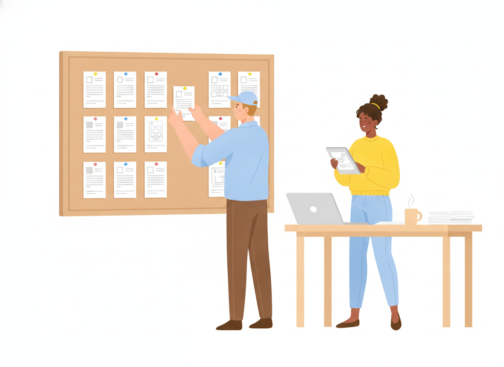
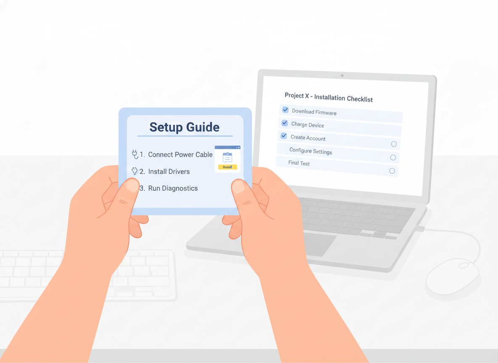

How to Create a User Manual: A Step-by-Step Guide
You know your product inside out. The hard part is handing that knowledge to someone who has never seen it before — and getting them to a result without a support call. That gap is what a user manual closes.
This guide walks through how to create a user manual step by step: who you're writing for, how to structure it around real tasks, how to write each instruction so people actually follow it, and how to keep the manual useful long after launch. The same process works whether you're writing a software manual, a quick start guide, or the documentation for a physical product.
A user manual is a document that helps someone use a product to complete a specific task — install it, set it up, fix a problem, or get a job done. It is not a feature catalog. Its job is action, not coverage.
Step 1: Start with the user, not the product
Before you write a single instruction, get clear on who is reading and what they're trying to do. A first-time buyer setting up an account needs something very different from an admin configuring permissions.
Map the real jobs your readers come to do, in the order they'll hit them. Then write to that person's vocabulary. As technical-writing practitioners note, describing the interface a reader can already see in front of them is redundant — what they need is help completing the task, in words they already use.
A short audience note at the top of your outline keeps the whole manual honest:
- Who is the reader, and what do they already know?
- What are they trying to accomplish?
- Where are they when they read this — at a desk, on a phone, mid-problem?
Step 2: Outline around tasks, not features
The most useful manuals are organized by what the reader wants to do, not by how the product is built. This is the core of minimalism, the documentation approach introduced by John Carroll in his 1990 book The Nurnberg Funnel. Carroll's research found that people learn faster from short, task-oriented chunks than from long, comprehensive manuals that explain everything up front.
So build your outline as a list of tasks, each a standalone topic:
- "Set up your account"
- "Import your first file"
- "Invite a teammate"
- "Reset a forgotten password"
Each becomes a section with a meaningful, searchable heading. This task-based structure is also why a short quick start guide works so well as the opening of a larger manual — it gets the reader to a first success fast, before any deep reference material.
Resist the urge to document every feature. Carroll's work, and the practitioners who built on it, found that bloated documentation backfires: when readers face a wall of text, they stop reading, and outdated detail can mislead more than no detail at all.
Step 3: Write each instruction in plain language
Once the structure is right, the writing itself is mostly discipline. People do not read manuals front to back — research from Nielsen Norman Group found users read only about 28% of the words on a page on average, scanning for the part that solves their problem.
Write for that reality:
- Use the imperative, active voice. "Click Save," not "The Save button can be clicked."
- One action per step. Number the steps so readers can track where they are.
- Keep sentences short. Nielsen Norman Group suggests aiming for roughly an 8th-grade reading level for a general audience — even for educated professional readers, plainer text is read faster and remembered better.
- Cut jargon, and use one term for one thing. Switching between "sign in," "log in," and "authenticate" for the same action quietly erodes a reader's confidence.
Clarity isn't just a nicety here. In one Nielsen Norman Group case study, rewriting content in plainer language nearly doubled how much readers retained — 65% versus 33%.

Step 4: Show, don't just tell
A screenshot, diagram, or short clip often replaces a paragraph. Add a visual wherever a reader would otherwise have to picture something — a screen, a button location, a wiring layout, a finished result.
Keep the page scannable so the visuals can breathe:
- Break steps into a numbered list, not a block of prose.
- Use descriptive headings a reader can navigate by.
- Leave white space; a crowded page reads as harder than it is.
- Add alt text to every image so the manual stays usable for everyone.
If you find yourself writing a long paragraph to explain where something is, that's usually a sign it should be a picture.
Step 5: Help readers recover when things go wrong
Minimalism doesn't mean hiding the hard parts — it means handling them where the reader actually hits them. Carroll treated user errors as a normal, expected part of learning, not a failure to design away.
Give each task a short "if this goes wrong" path: the symptom the reader will notice, the likely cause, and the fix, written in their language. A dedicated troubleshooting or FAQ section, structured around recognizable problems rather than internal error codes, lets people solve issues themselves — which is exactly the moment a manual saves a support ticket.
Step 6: Make it findable
A manual only works if readers can reach the right part fast. Because people search and scan rather than read in order, findability is part of the writing job, not an afterthought.
- Write meaningful titles that match the words readers would search for.
- Add a clear table of contents and, for longer manuals, an index that includes synonyms.
- Make sure the manual is genuinely searchable, not a flat PDF someone has to scroll.
When a heading answers the exact question a reader typed, you've done the work.
Step 7: Test the manual with real users
You are the worst judge of your own instructions because you already know the answer. Before you publish, watch a few people who match your audience try to complete a task using only the manual.
You'll learn more from three short sessions than from any internal review. Note every place a reader hesitates, backtracks, or asks a question the manual should have answered, and fix those first. Reviewers focused specifically on finding over-explained or confusing sections catch problems that ordinary proofreading misses.
Step 8: Publish, then keep it current
A user manual is never truly finished — your product changes, and the manual has to keep up. The goal is a single source of truth: one version everyone trusts, rather than scattered PDFs that quietly fall out of date.
A few habits keep a manual alive after launch:
- Publish somewhere readers can reach instantly — a searchable web page beats an attachment, and a mobile-friendly layout meets people where they are.
- Collect feedback on every page so you can see which topics confuse readers and improve them.
- Keep version history so you can see what changed and roll back if needed.
- Translate for the audiences you serve, so a reader in another language gets the same clear instructions.
This is the part where the right tool earns its keep. Sonat lets non-technical teams draft a manual in Google Docs, publish it to a searchable, mobile-friendly site, gather reader feedback, keep a full version history, and translate into many languages — so the manual you worked hard to write stays clear, current, and easy to find.
A simple user manual template
If you'd rather not start from a blank page, this lightweight user manual template works for almost anything — a software manual, a hardware product, or an internal process. Keep only the parts your readers need:
- Title and version — what this covers and which release it matches.
- Quick start guide — the shortest path to a first success, for readers who won't read the rest.
- Before you begin — what the reader needs ready (an account, a part, a permission).
- Task sections — one per job the reader came to do, each a numbered, plain-language procedure with a visual.
- Troubleshooting / FAQ — common symptoms, causes, and fixes in the reader's words.
- Glossary (optional) — only the terms a reader genuinely won't know.
- How to get more help — where to go when the manual runs out.
Treat the template as a starting point, not a quota. A short manual that answers the real questions beats a long one that pads every section to look complete.
Start with one task
You don't have to document everything at once. Pick the single task your users struggle with most, write that one section well — clear audience, task-based steps, plain language, a visual, and a way out when things go wrong — and test it with a real reader. Do that a few times and you have a user manual people actually use, instead of one they avoid.